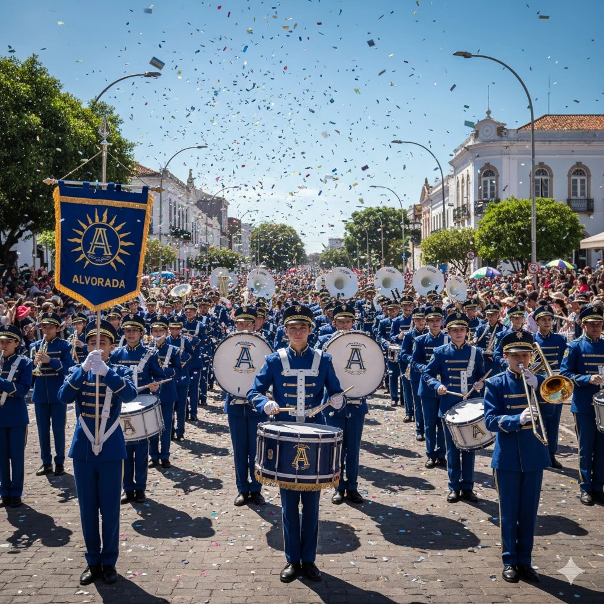

Oficinas Musicais
Levamos a música para além dos nossos ensaios. Nossos membros realizam oficinas gratuitas de percussão e sopro em escolas públicas e centros comunitários da região.
Leia MaisMúsica, disciplina e transformação social. Conheça a nossa batida que move corações e constrói futuros.
Fundada em 1998, a Banda Marcial Alvorada nasceu do sonho de oferecer uma oportunidade de desenvolvimento cultural e social para jovens da nossa comunidade. O que começou com alguns instrumentos e muita vontade, hoje se tornou uma das mais respeitadas bandas marciais da região.
Nossa missão vai além da música. Através da disciplina, do trabalho em equipe e da dedicação, formamos não apenas músicos, mas cidadãos conscientes e preparados para os desafios da vida.
A base para a excelência musical e pessoal, cultivando o foco e a responsabilidade em cada membro.
Somos uma família unida pela música, onde o apoio mútuo e o respeito são nossos maiores valores.
A energia que nos impulsiona a superar limites e a transmitir emoção em cada nota que tocamos.
Levamos a música para além dos nossos ensaios. Nossos membros realizam oficinas gratuitas de percussão e sopro em escolas públicas e centros comunitários da região.
Leia MaisOrganizamos visitas e apresentações especiais em formato reduzido para instituições de longa permanência (casas de repouso), hospitais e centros de acolhimento em nossa cidade.
Leia MaisSemestralmente, promovemos um "Ensaio Aberto Beneficente" em uma praça pública, convidando toda a população para assistir e participar com 1 kg de alimento, que são destinados à instituições de caridade.
Leia MaisRua Gaurama, 210
Centro, Erechim - RS
CEP: 99700-000